Houston Travel Guide
Thriving urban center renowned for its cutting-edge medical research, vibrant cultural institutions, and diverse culinary traditions.
Top Locations
Places to See in Houston
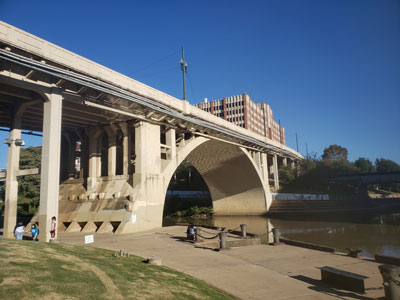
Jeff P from Berkeley, CA, USA, CC BY 2.0, via Wikimedia Commons; Image Size Adjusted
.jpg){kind=link}
Allens Landing
Historic waterfront park featuring public art, scenic bayou views, walking paths, and the site recognized as the birthplace of Houston.
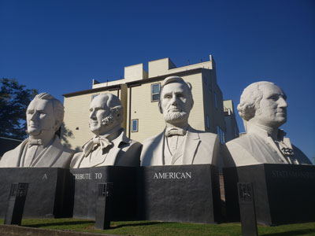
Jeff P from Berkeley, CA, USA, CC BY 2.0, via Wikimedia Commons; Image Size Adjusted
American Statesman Park
Small outdoor sculpture park showcasing monumental busts of American and Texas leaders created by renowned artist David Adickes.

Jeff P from Berkeley, CA, USA, CC BY 2.0, via Wikimedia Commons; Image Size Adjusted
ArtCar Museum
Museum dedicated to artistically transformed vehicles and contemporary art exhibits featuring local, national, and international creators.

Jeff P from Berkeley, CA, USA, CC BY 2.0, via Wikimedia Commons; Image Size Adjusted
Buffalo Bayou Park
2.3 mile long municipal park located along the banks of the Buffalo Bayou near Downtown Houston, featuring a skate park, picnic area, dog park, cultural events hall, and miles of bike and hiking trails
Jeff P from Berkeley, CA, USA, CC BY 2.0, via Wikimedia Commons; Image Size Adjusted
Cockrell Butterfly Center
Three-story glass conservatory filled with tropical plants and hundreds of live butterflies fluttering freely in a rainforest environment.
Jeff P from Berkeley, CA, USA, CC BY 2.0, via Wikimedia Commons; Image Size Adjusted
Contemporary Arts Museum Houston
Non-collecting institution showcasing rotating exhibitions of cutting-edge contemporary art from emerging and established artists across diverse media.
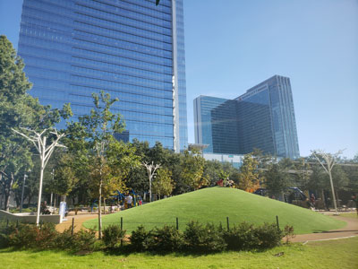
Jeff P from Berkeley, CA, USA, CC BY 2.0, via Wikimedia Commons; Image Size Adjusted
Discovery Green
Twelve-acre public park featuring gardens, public art installations, recreational spaces, a lake, playgrounds, dining venues, and year-round events.
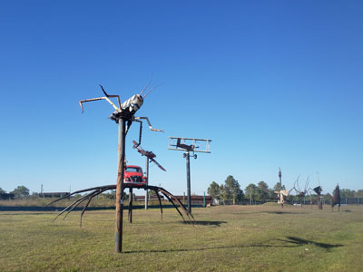
Jeff P from Berkeley, CA, USA, CC BY 2.0, via Wikimedia Commons; Image Size Adjusted
Eclectic Menagerie
Outdoor sculpture display featuring oversized metal animals, fictional characters, and imaginative artworks created from industrial steel and pipe materials.
Jeff P from Berkeley, CA, USA, CC BY 2.0, via Wikimedia Commons; Image Size Adjusted
Gerald D. Hines Waterwall Park
Multi-story sculptural fountain that sits opposite the south face of Williams Tower in the Uptown District of Houston
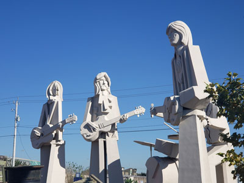
Jeff P from Berkeley, CA, USA, CC BY 2.0, via Wikimedia Commons; Image Size Adjusted
Giant Beatles Statues
Towering pop-art sculptures depicting the four Beatles in colorful Sgt. Pepper-era attire, created by renowned Texas artist David Adickes.
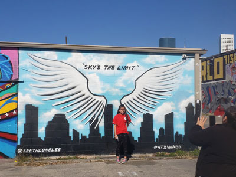
Jeff P from Berkeley, CA, USA, CC BY 2.0, via Wikimedia Commons; Image Size Adjusted
Graffiti Park
Open-air street art destination featuring constantly changing murals, graffiti, and large-scale urban artwork created by local and visiting artists.
Jeff P from Berkeley, CA, USA, CC BY 2.0, via Wikimedia Commons; Image Size Adjusted
Health Museum
Interactive science center featuring hands-on exhibits focused on health, the human body, and medical science for all ages.
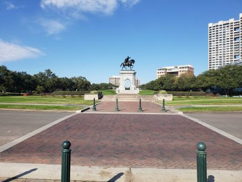
Jeff P from Berkeley, CA, USA, CC BY 2.0, via Wikimedia Commons; Image Size Adjusted
Hermann Park
445-acre urban park in Houston, home to numerous cultural institutions including the Houston Zoo, Miller Outdoor Theatre, the Houston Museum of Natural Science, and the Hermann Park Golf Course
Jeff P from Berkeley, CA, USA, CC BY 2.0, via Wikimedia Commons; Image Size Adjusted
Holocaust Museum Houston
Three-story museum featuring immersive exhibits, historical artifacts, and educational programs focused on the Holocaust, human rights, and social justice.
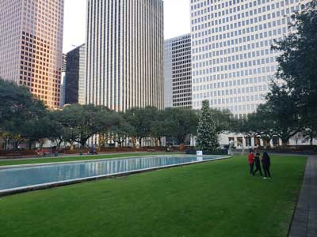
Jeff P from Berkeley, CA, USA, CC BY 2.0, via Wikimedia Commons; Image Size Adjusted
Houston City Hall / Hermann Square
Houston City Hall building and square built in a simple, but regal elegance and is regularly used for festivals, protests and concerts
Jeff P from Berkeley, CA, USA, CC BY 2.0, via Wikimedia Commons; Image Size Adjusted
Houston Museum of Natural Science
Expansive science complex featuring permanent exhibits on paleontology, astronomy, chemistry, and wildlife alongside a planetarium, butterfly center, and giant screen theater.
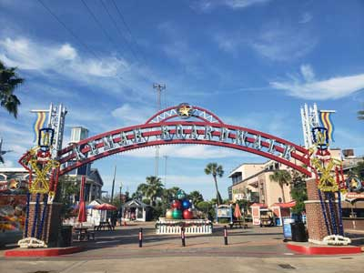
Jeff P from Berkeley, CA, USA, CC BY 2.0, via Wikimedia Commons; Image Size Adjusted
Kemah Boardwalk
60-acre Texas Gulf Coast theme park home to more than 10 restaurants, a collection of rides, midway games, attractions, a boutique hotel, a charter yacht, a 400-slip marina and multiple shops
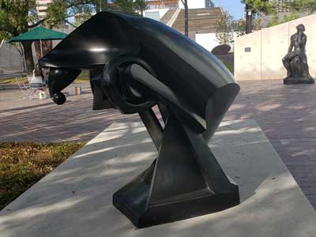
Jeff P from Berkeley, CA, USA, CC BY 2.0, via Wikimedia Commons; Image Size Adjusted
Lillie and Hugh Roy Cullen Sculpture Garden
Sculpture garden located at the Museum of Fine Arts, Houston, consisting of 25 works
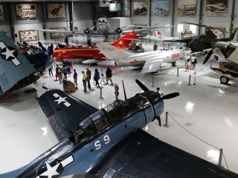
Jeff P from Berkeley, CA, USA, CC BY 2.0, via Wikimedia Commons; Image Size Adjusted
Lone Star Flight Museum
Aviation museum featuring historic aircraft, interactive flight exhibits, and galleries exploring the history of flight and aerospace innovation.
Jeff P from Berkeley, CA, USA, CC BY 2.0, via Wikimedia Commons; Image Size Adjusted
Love Lock Bridge
Pedestrian bridge decorated with commemorative padlocks and offering panoramic views of the skyline, parkland, and surrounding trails.
Jeff P from Berkeley, CA, USA, CC BY 2.0, via Wikimedia Commons; Image Size Adjusted
Market Square Park
Downtown green space featuring open lawns, public art, frequent community events, shaded seating areas, and a popular dog run.
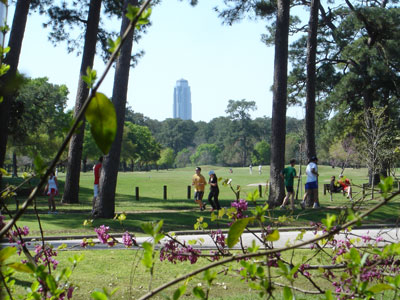
Jeff P from Berkeley, CA, USA, CC BY 2.0, via Wikimedia Commons; Image Size Adjusted
Memorial Park
Large urban park featuring forests, prairies, wetlands, hiking and biking trails, sports facilities, picnic areas, and extensive outdoor recreation opportunities.
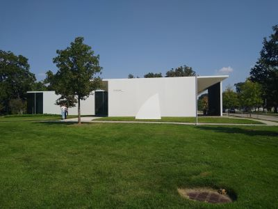
Jeff P from Berkeley, CA, USA, CC BY 2.0, via Wikimedia Commons; Image Size Adjusted
Menil Collection
Architecturally distinctive art museum offering free admission to a diverse collection spanning ancient artifacts to modern and contemporary works in a serene campus setting.
Jeff P from Berkeley, CA, USA, CC BY 2.0, via Wikimedia Commons; Image Size Adjusted
Museum of Fine Arts Houston
Expansive art museum housing over 65,000 works from six continents, spanning antiquity to contemporary art, across multiple buildings and tranquil gardens.
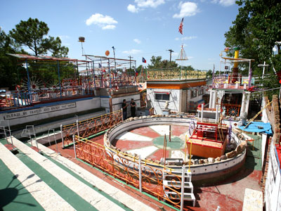
Jeff P from Berkeley, CA, USA, CC BY 2.0, via Wikimedia Commons; Image Size Adjusted
The Orange Show
Folk art environment featuring a maze-like collection of mosaics, sculptures, walkways, stages, and handcrafted structures dedicated to the celebration of the orange.
Jeff P from Berkeley, CA, USA, CC BY 2.0, via Wikimedia Commons; Image Size Adjusted
Sam Houston Park
Historic urban park featuring preserved nineteenth-century buildings, landscaped gardens, monuments, walking paths, and exhibits highlighting regional history.
Jeff P from Berkeley, CA, USA, CC BY 2.0, via Wikimedia Commons; Image Size Adjusted
San Jacinto Museum and Battleground
Historic battlefield and museum complex featuring a monumental observation tower, exhibits on the Texas Revolution, and preserved prairie landscapes.
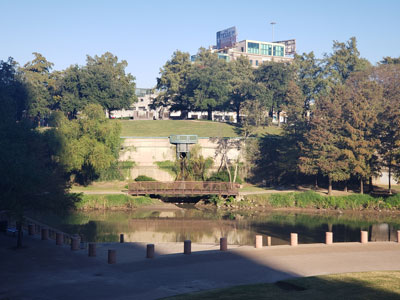
Jeff P from Berkeley, CA, USA, CC BY 2.0, via Wikimedia Commons; Image Size Adjusted
Sesquicentennial Park
Multi-level waterfront park featuring landscaped gardens, walking paths, public art, monuments, event spaces, and scenic views of a historic bayou.
Jeff P from Berkeley, CA, USA, CC BY 2.0, via Wikimedia Commons; Image Size Adjusted
Space Center Houston
Science museum which serves as the official visitor center of NASA Johnson Space Center in Houston, displaying 400 space artifacts, and permanent and traveling exhibits
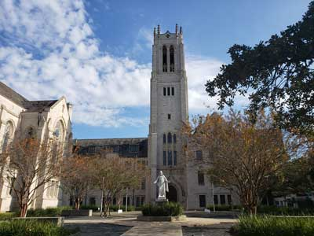
Jeff P from Berkeley, CA, USA, CC BY 2.0, via Wikimedia Commons; Image Size Adjusted
St. Paul's United Methodist Church
Church, founded in 1906, in the city's Museum District, with Grecian design and a dome reminiscent of Byzantine architecture
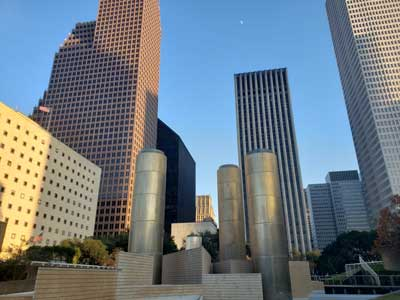
Jeff P from Berkeley, CA, USA, CC BY 2.0, via Wikimedia Commons; Image Size Adjusted
Tranquillity Park
Two-block-long oasis of water and walkways and mounds and depressions representing cratered lunar surface, the park's 32-level Wortham Fountain features towering stainless steel cylinders designed to resemble the Apollo's rocket boosters
Overview
Houston is the largest city in Texas and the fourth-largest in the United States, with about 2.3 million residents in the city and more than seven million in the metropolitan area. A sprawling, diverse metropolis in Southeast Texas near Galveston Bay and the Gulf of Mexico, it is best known as the home of NASA's Johnson Space Center, "Space City," where the famous words "Houston, we have a problem" were spoken during Apollo 13. It is also a global capital of the energy industry, the site of the Texas Medical Center, the largest medical complex in the world, and home to one of the busiest ports in the nation through the Houston Ship Channel.
Houston is among the most ethnically diverse large cities in the country, and that diversity shows in its neighborhoods, festivals and food. Visitors come for NASA and space exploration, top-ranked museums and a thriving performing arts scene, major sports teams, the Houston Livestock Show and Rodeo, and a food scene that ranges from Texas barbecue and Tex-Mex to Vietnamese, Indian, Nigerian and Cajun cuisine. Houston is also the gateway to the beaches of Galveston and the Gulf Coast, and, with no zoning in the city and a reputation for friendliness, it has an unpretentious, entrepreneurial spirit.
Houston was founded in 1836 by brothers Augustus and John Kirby Allen at the confluence of Buffalo Bayou and White Oak Bayou, a point now known as Allen's Landing, and named after General Sam Houston, who led Texas to independence from Mexico at the nearby Battle of San Jacinto. The city briefly served as capital of the Republic of Texas in 1837 to 1839 before growing into a railroad and cotton hub. The discovery of oil at Spindletop in 1901 and the opening of the Houston Ship Channel in 1914 turned the city into a center of the petrochemical industry, and the energy boom of the 20th century fueled enormous growth. In 1961 NASA chose Houston as the site of its Manned Spacecraft Center, later renamed the Johnson Space Center, and the Astrodome opened in 1965 as the world's first domed stadium. Houston has weathered major hurricanes and floods, including Hurricane Harvey in 2017, and continues to be one of the fastest-growing cities in the country.
Space Center Houston, the official visitors' center of NASA's Lyndon B. Johnson Space Center, lets visitors see moon rocks, a Saturn V rocket, a shuttle replica and the historic Mission Control, and take a tram tour of the working space center. The San Jacinto Monument, taller than the Washington Monument, marks the site of the battle that won Texas independence. Downtown highlights include Discovery Green, Gerald D. Hines Waterwall Park, City Hall, Market Square, the Theater District and the six-mile downtown tunnel system, and local oddities include the Giant Beatles Statues, Graffiti Park, the Love Lock Bridge, the Orange Show folk-art monument and the Eclectic Menagerie. Kemah Boardwalk, a waterfront amusement area, is about 30 miles southeast.
Houston's Museum District is home to nineteen museums, galleries and community spaces that draw millions of visitors a year. Highlights include the Museum of Fine Arts, Houston, one of the largest art museums in the country, with the Cullen Sculpture Garden and Bayou Bend Collection; the Menil Collection, next to the Rothko Chapel; the Contemporary Arts Museum; the Houston Museum of Natural Science and its Cockrell Butterfly Center; the Holocaust Museum Houston; the Health Museum; the Lone Star Flight Museum and the Art Car Museum. The Theater District downtown is home to resident companies in opera, ballet, symphony and theater, including the Houston Grand Opera, Houston Ballet, Houston Symphony and Alley Theatre, and Houston is one of the few U.S. cities with all of these.
Houston has more than 380 parks. Hermann Park, next to the Museum District, is home to the Houston Zoo, the Japanese Garden, the McGovern Centennial Gardens, McGovern Lake and the Miller Outdoor Theatre. Memorial Park, about 1,500 acres, is one of the largest urban parks in the country, with trails, a land bridge over Memorial Drive and a golf course. Buffalo Bayou Park follows the bayou with trails, kayaking and public art near downtown, and Discovery Green hosts concerts and events. Sam Houston Park preserves historic buildings, and Sesquicentennial Park and Tranquillity Park are also downtown. Brazos Bend State Park, about 45 miles southwest, is known for its alligators.
Houston is one of the most exciting food cities in the United States. The city is famous for Texas barbecue, Tex-Mex, which includes fajitas and queso, Gulf Coast seafood and Cajun-influenced dishes, and it is the birthplace of Viet-Cajun crawfish, a fusion of Vietnamese and Louisiana flavors. International choices are exceptional, from Vietnamese pho and banh mi in Bellaire and Midtown, to Indian on Hillcroft Avenue, Chinese in Chinatown, Nigerian, Korean, Mexican, Salvadoran and Pakistani restaurants. The Michelin Guide began covering Texas in 2024 and recognized restaurants in Houston, and James Beard Award-winning chefs such as Hugo Ortega, Chris Shepherd and Justin Yu have put the city on the national dining map. For shopping, the Galleria, Texas's largest shopping mall, offers hundreds of stores, and other options include River Oaks District, Rice Village, CityCentre and the antiques shops and boutiques of The Heights.
About 50 miles southeast, Galveston is a historic barrier island city and the closest major beach destination to Houston. The 10-mile Seawall is lined with beaches, such as Galveston Beach, Stewart Beach and East Beach, and the Pleasure Pier offers amusement rides over the water. Galveston Island State Park has beaches and bayside wetlands, the Strand Historic District has Victorian buildings, shops and restaurants, and Bishop's Palace is a grand Gilded Age mansion. The Texas Seaport Museum is home to the 1877 tall ship Elissa, the Ocean Star Offshore Drilling Rig & Museum shows offshore energy, and Moody Gardens offers pyramids with a rainforest and aquarium. Galveston was devastated by the 1900 hurricane, the deadliest natural disaster in U.S. history, and is the site where Juneteenth began in 1865. The Gulf water is warm and brownish, and the best beach weather runs from May through September, with hurricane season from June to November. Nearby, the Bolivar Peninsula is reached by a free ferry, and Kemah offers waterfront dining.
Houston is home to major league teams in every sport. The Houston Astros (MLB), World Series champions in 2017 and 2022, play at Daikin Park downtown. The Houston Rockets (NBA), two-time champions in 1994 and 1995, play at the Toyota Center, and the Houston Texans (NFL) play at NRG Stadium. Houston Dynamo FC (MLS) and the Houston Dash (NWSL) play at Shell Energy Stadium. The Houston Livestock Show and Rodeo, held each February and March at NRG Park, is one of the largest rodeos in the world, and the Houston Cougars, Rice Owls and Texas Southern Tigers compete in college sports. The Astrodome, the "Eighth Wonder of the World," still stands next to NRG Stadium.
Sources: This article uses material from the Wikipedia articles "Houston" and "History of Houston", which are released under the Creative Commons Attribution-Share-Alike License 3.0. Additional information from Visit Houston, Space Center Houston, NASA Johnson Space Center, Galveston Island Convention & Visitors Bureau, the Houston Museum District Association, the Houston Parks and Recreation Department, the Michelin Guide Texas, the National Weather Service Houston/Galveston, the City of Houston and the official websites of the attractions, museums and teams mentioned.

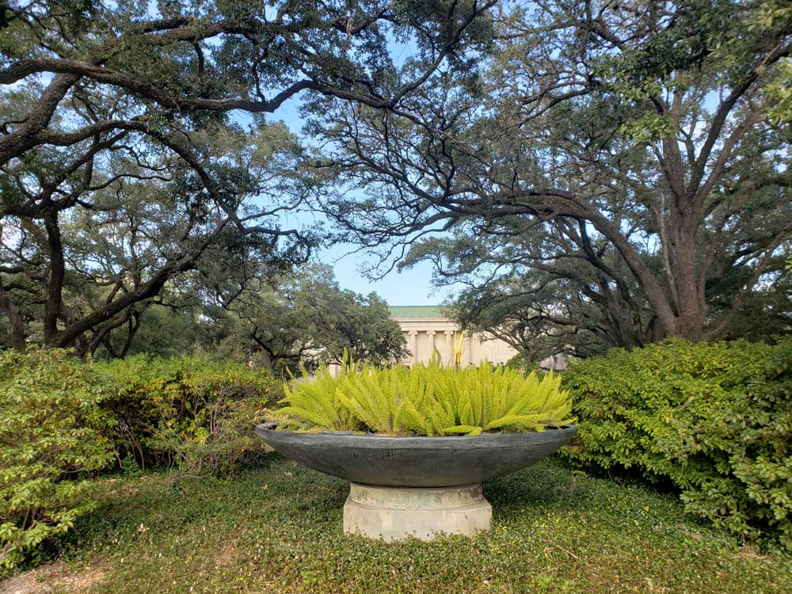
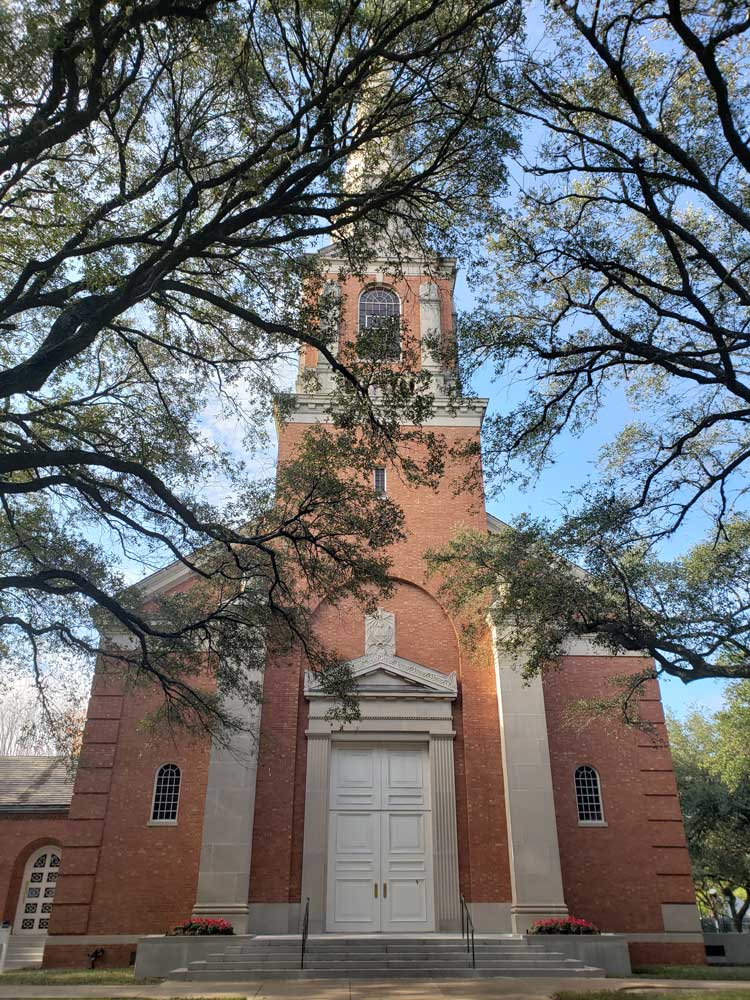
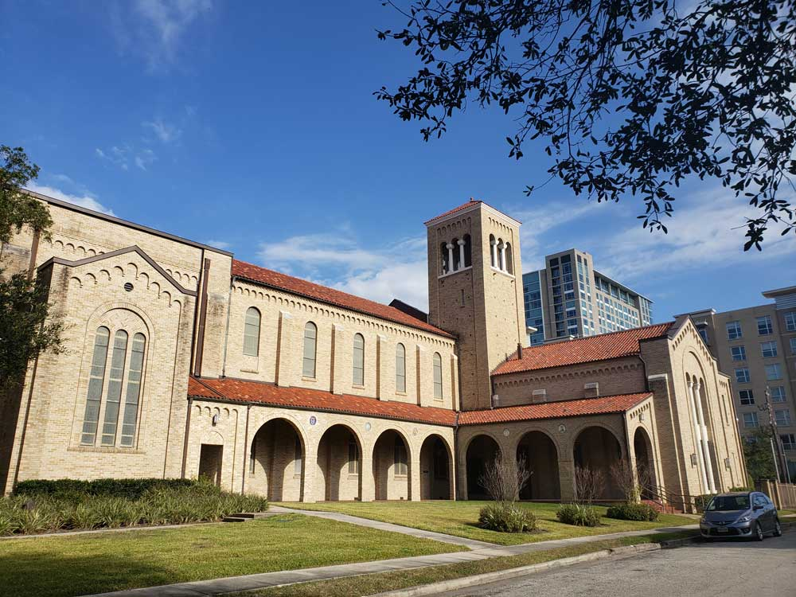
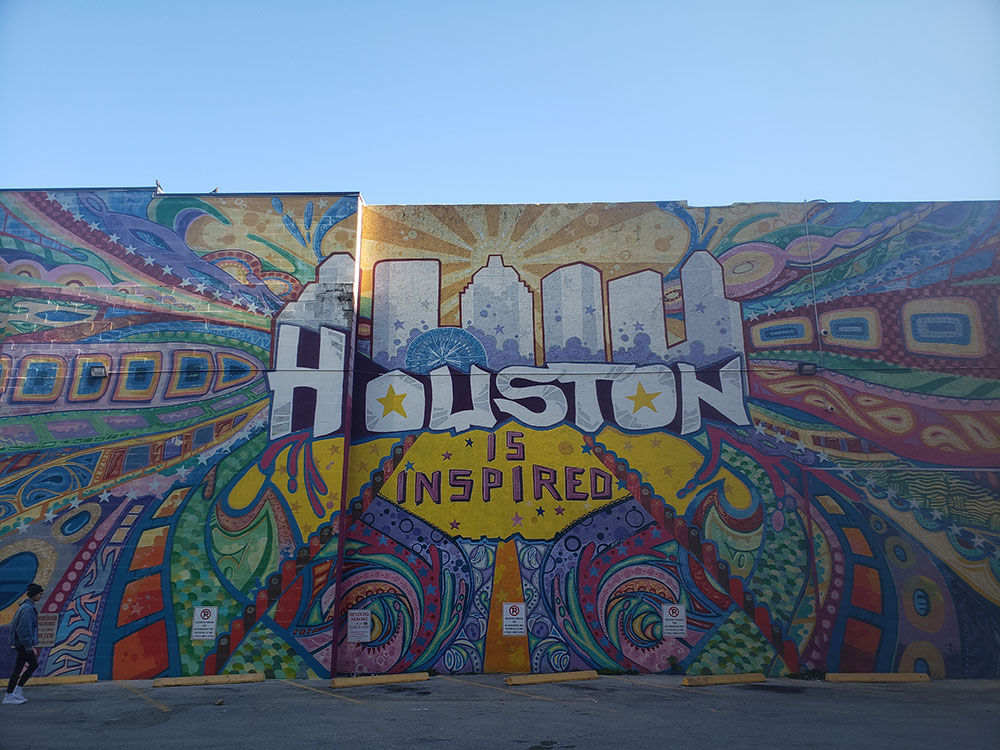
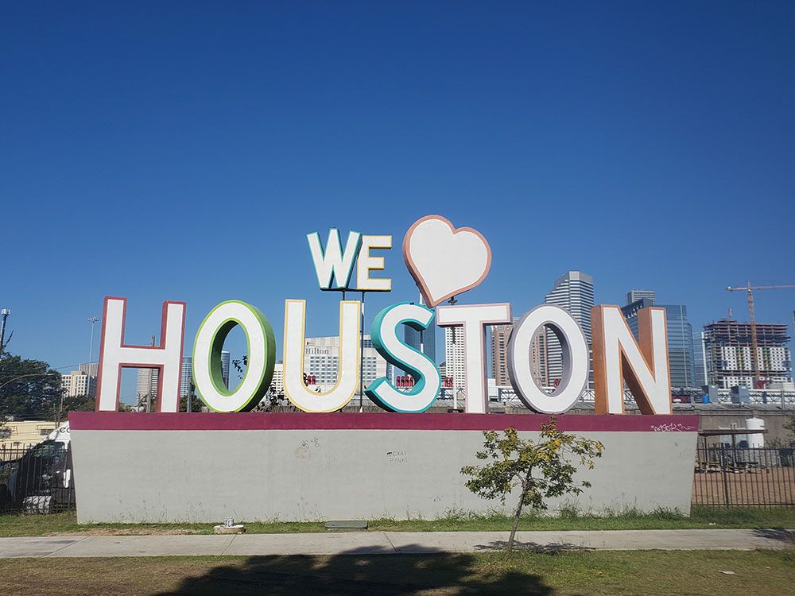